Data
Data
Setup
Operating Instructions
- Cases requiring Outage Tooling be informed and ER case submitted
- Failed OP Check, after performing steps outlined in 5.4.7.14
- Stamped Casing thickness producing error in app upon selecting “Collect” as outlined in 6.1.4.6
- Any Manually overwritten clearance values as outlined in 5.4.2Any failed troubleshooting steps in section 7
- E4 Point Procedure – High Level Overview
- Pre Set-Up – tool inspection, verify GT assembly configuration. Full procedure can be found in Section 5.4
The upper GT cases are installed and fully torqued – All cases must be installed and tensioned including the mini-case. - Set up base station
- See FRD-T-0507-01 for full Casing plug removal procedure
- Remove all clearance hole plugs, including inner casing plugs and clean area around plug hole to ensure no debris, anti-seize or corrosion is on the flat surface the stand off/spacer attaches too. This will ensure proper magnetic mating of the stand offs and accurate measurements. Any Debris between the stand off and casing will directly affect the measurement accuracy.
For Opening Clearances it is required that the clearance probe holes are cleaned of corrosion prior to rotating the rotor. Cleaning may require a bottle brush, air, and in extreme corrosion instances a drill per FE/TFA discretion. - Ensure rotor is on Turning gear or otherwise rotating with Lift Oil if required. Obtain shaft RPM. A smooth rotor rotation is required, system is designed to work with a rotor rotation between 0.5 and 15 RPM
- Shaft RPM can be determined manually, from Customer Control Room, or via TRACC scan app (FRD-T-2017-1055)
- If determining RPM via the app a manual verification of RPM is also needed
- Install stage and frame specific spacer into clearance probe holes and verify NO sensor interference with turbine blades by inserting the dummy probe while rotor is rotating..
- Dummy Probe should be slightly longer (0.25”-0.33”) than the actual sensor and whole. Do not use a broken dummy probe. Intact probe will have hole features on the end of the probe
- See Figure 15 Dummy Probe Length Check with Sensor for example of whole Dummy Probe compared to Sensor.
- Ensure rotor rotates through multiple airfoils before removing dummy probe to ensure no interference with the turbine blades
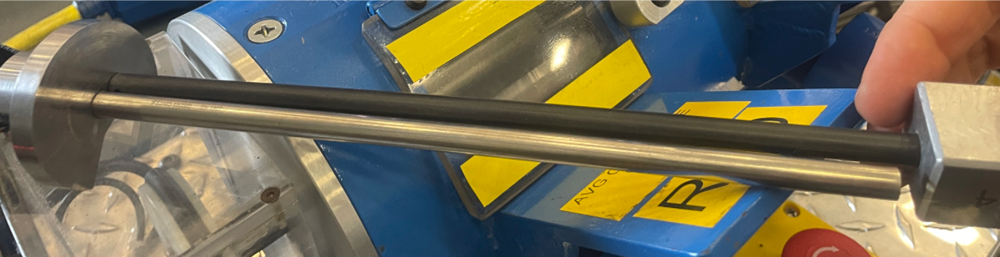
Dummy Probe Length Check with Sensor
WARNING!
Failure to check gross clearance with the Dummy Probe can result in sensor decapitation and FOD introduction to the turbine.
- Install sensor into spacer
- Follow e4 Point App process for measuring a turbine for specific stage and location
- See section 5.4 for pre-set up and use instructions
- When data has been recorded for current location, measurement can then be performed at next location on the same stage by performing the above procedure from step 5.2.5
- When all locations for current stage have been measured repeat procedure for next stage starting with step 5.2.5 The correct spacer must be used for each stage and location. Failure to use correct spacer can cause sensor decapitation, FOD introduction to the turbine, or failure to accurately measure clearances
- When all stages and locations have been measured load all raw data files to GE Vernova Box using “Export” button as shown in Figure 29 and section 6.2
- Generate the customer report and load to GE Vernova Box and send to customer if applicable using “Report” button as shown in Figure 29 and section 6.2
- Disassemble tool and package back into appropriate containers
- Pre Set-Up – tool inspection, verify GT assembly configuration. Full procedure can be found in Section 5.4
- Tool Storage and operation Temperature requirements
- Operating Temperature
Component Temperature Range Controller 5 to +50 °C (+41 to +122 °F) Sensor 5 to +70 °C (+41 to +158 °F) Humidity 5 - 95 % (non-condensing) -
Storage Requirements
Temperature -20 to +70 °C (-4 to +158 °F) Humidity 5 - 95 % (non-condensing)
- Operating Temperature
- Tools, Equipment, and Materials
- Tools List (covered in this document) from 134T1076 and 134T1086 (Long and Short sensor kit assemblies)
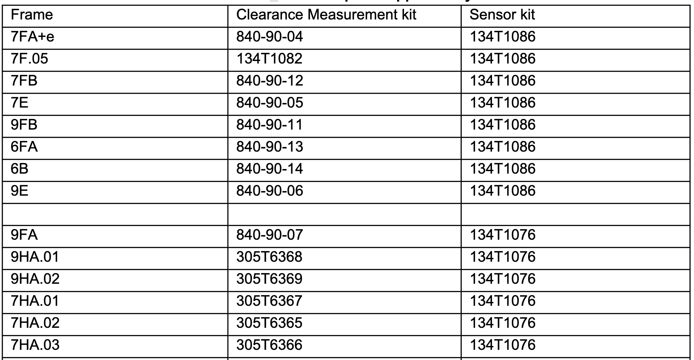
Kit and spacer applicability
-
 840-90-04 7FA+e Spacers and Dummy Probe
840-90-04 7FA+e Spacers and Dummy Probe
-
 840-90-07 9FA Spacers and Dummy Probe
840-90-07 9FA Spacers and Dummy Probe
-
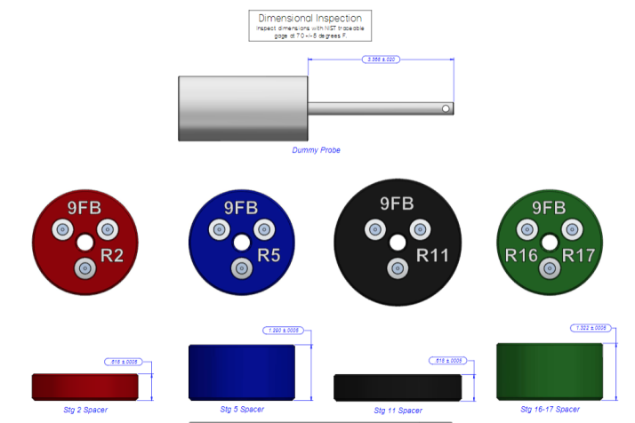
840-90-11 9FB Spacers and Dummy Probe
-
840-90-11 9FB Spacers and Dummy Probe
-
 840-90-12 7FB Spacers and Dummy Probe
840-90-12 7FB Spacers and Dummy Probe
-
 840-90-13 6FA Spacers and Dummy Probe
840-90-13 6FA Spacers and Dummy Probe
-
 840-90-14 6B Spacer and Dummy Probe
840-90-14 6B Spacer and Dummy Probe
-
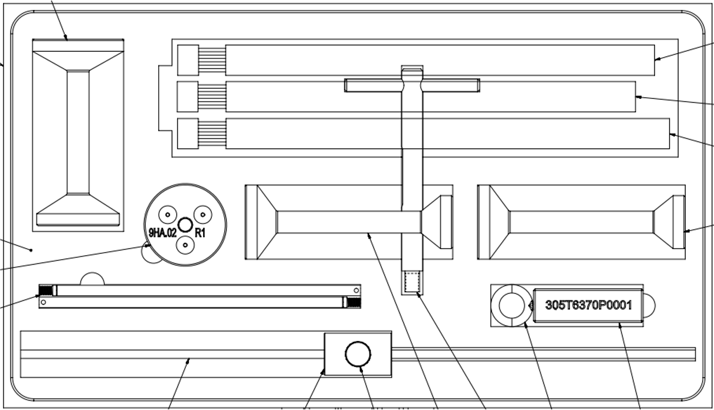
9HA.02 Rotor Clearance Kit
-
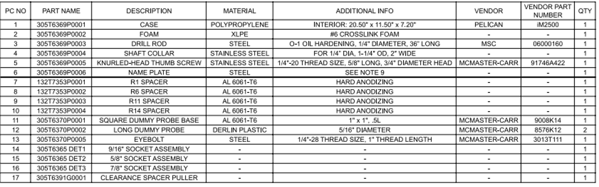
305T6369 9HA.02 Rotor Clearance measurement kit, with 305T6365
-
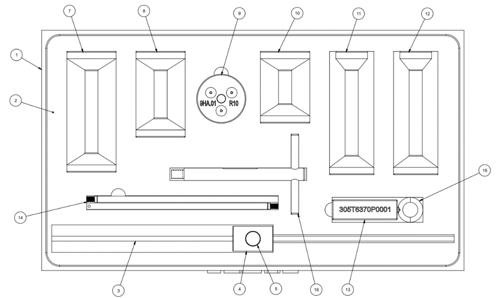
9HA.01 Rotor Clearance Kit
-
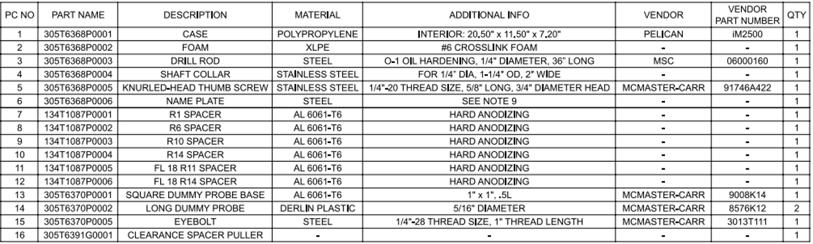
305T6368 9HA.01 Rotor Clearance measurement kit
-
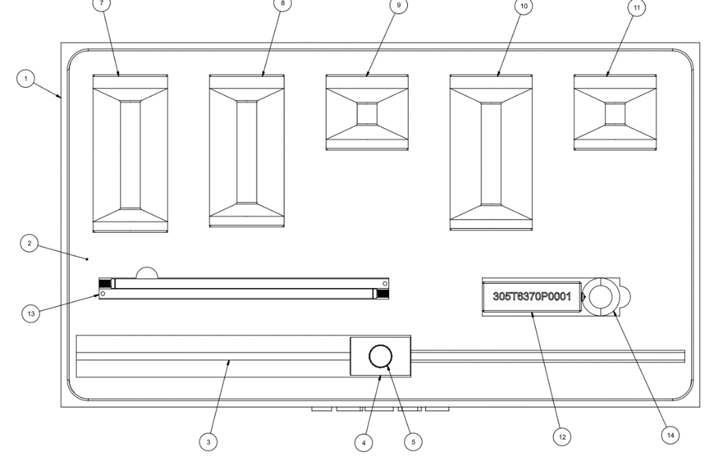
7HA.01 Rotor Clearance Kit
-
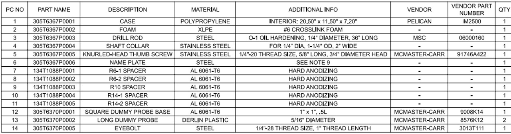
305T6367 7HA.01 Rotor Clearance measurement kit
-
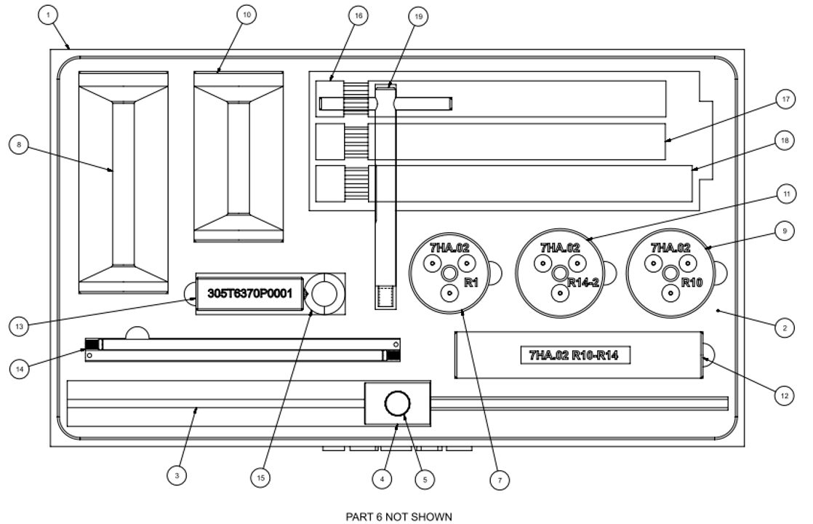
7HA.02 Rotor Clearance Kit
-
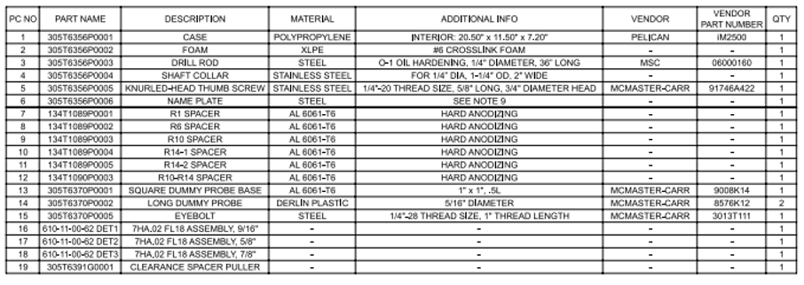
305T6356 7HA.02 Rotor Clearance measurement kit, with 610-11-00-62
-
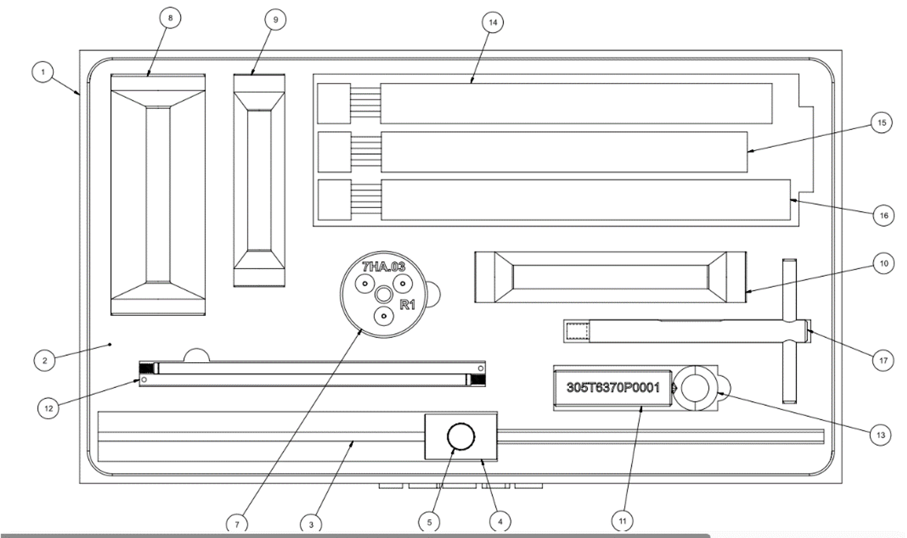
7HA.03 Rotor Clearance Kit
-
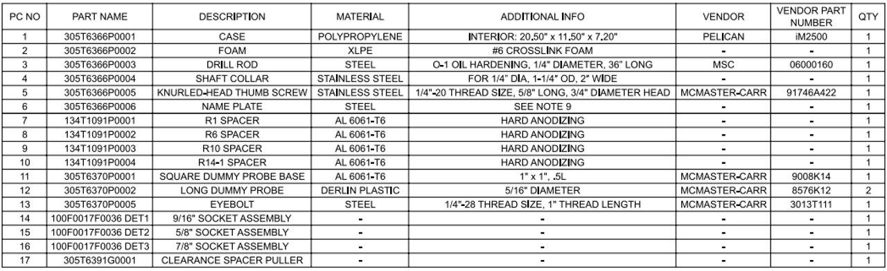
305T6366 7HA.03 Rotor Clearance measurement kit with 100F0017F0036
-
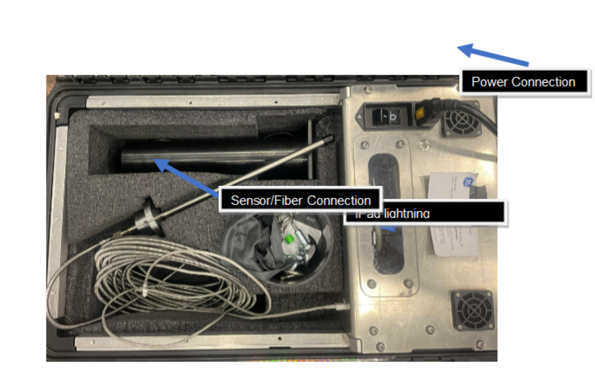
Controller kit connections (Long Sensor Kit Shown)
-
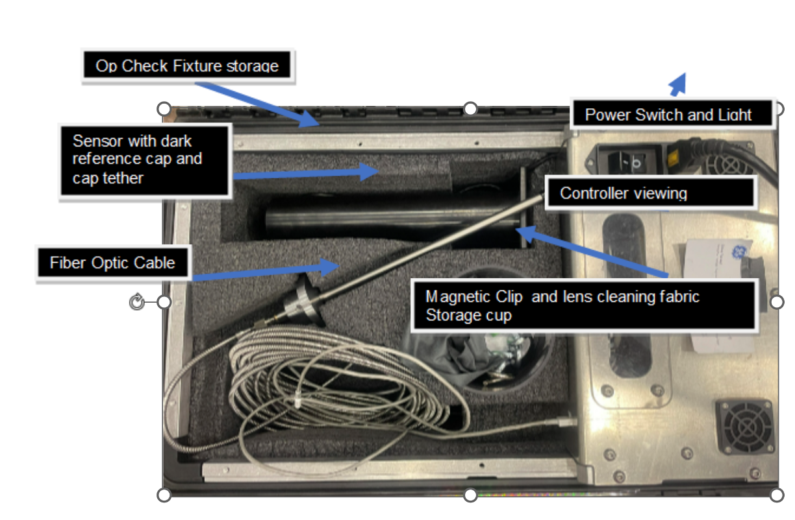
Controller Box Components
- Cleaning Instructions:
- The base station, sensor, and cabling are NOT considered submergible or waterproof. To clean the external features and spacers, use a lint free cloth dampened with water. Wipe residue free and wipe excess liquid. Do not close lid to case before surfaces are dry.
- Dry Cleaning: wipe the face of the sensor lens with an optics anti-static lint-free brush or cloth or blow with canned electronics grade dehumidified, clean, oil-free compressed air.
- Wet Cleaning: Use a clean soft, lint-free cloth or lens cleaning paper with pure alcohol (50% isopropyl)
- Tools List (covered in this document) from 134T1076 and 134T1086 (Long and Short sensor kit assemblies)
-
Gas Turbine Setup
- The upper GT cases are installed and fully torqued – All cases must be installed and tensioned including the mini-case.
- All Clearance probe plugs are removed and surfaces cleaned, including inner compressor case/Double Wall Casing Plugs.
See FRD-T-0507-01 (Inner Compressor Case Plug Removal and Rotor Rim Checks) for more details
- The Compressor Clearance measurement kits are equipped with everything needed to perform manual measurements (drop check) of the Compressor Airfoil clearances through the 6 point/4 point holes, with the exception of basic hand tools and precision measurement equipment
- If manual checks are required due to an error in the app or with the hardware an ER case must be entered and the Outage Tooling Team informed
-
To begin Compressor Clearance Measurement on a Single Wall Compressor
- Determine appropriate clearance hole plug to be removed. These plugs are denoted with “CP” stamped on the Casing next to a number that represents the Casing thickness
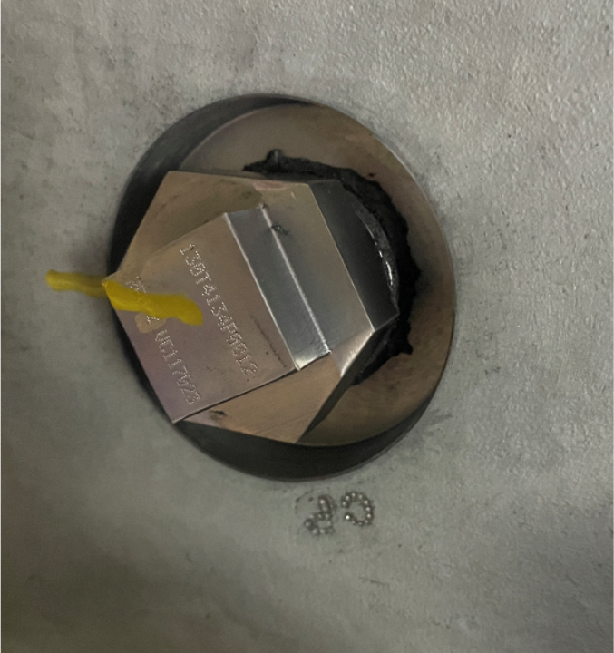
Square Outer Casing Clearance plug with “CP” stamped on the case
- Each Clearance Probe hole is plugged to prevent dirt and debris from entering the turbine. For single wall casings this plug can simply be removed.
Care should be taken to mark the plugs with each location or replace the plug immediately after measurement to avoid accidental installation of an incorrect plug.
- Determine appropriate clearance hole plug to be removed. These plugs are denoted with “CP” stamped on the Casing next to a number that represents the Casing thickness
- To begin Measurements on a double walled Compressor
- Double walled compressor measurements require the removal of the outer casing clearance plug as well as the inner casing clearance plug
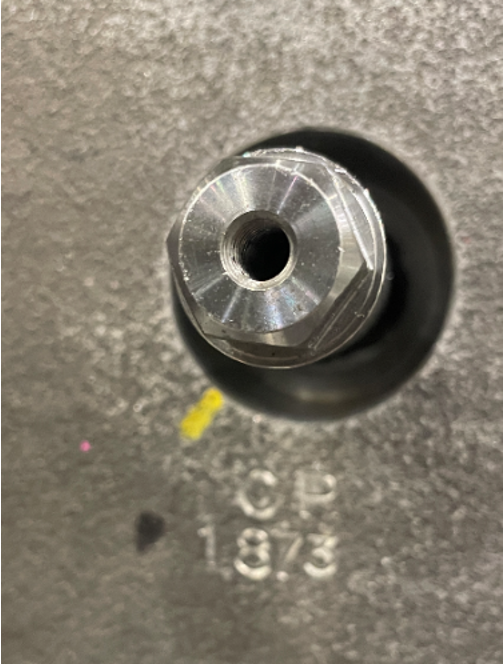
Inner Compressor Casing plug. Shown with Outer case removed and Casing Thickness Stamped
-
Removal of the outer casing plug is the same as with single walled compressors. See FRD-T-0507 for more complete guidance.
Note – Using a 12 point socket on larger/square plugs has been found useful See Figure 16: Square Outer Casing Clearance plug with “CP” stamped on the case. 12 point socket should be used on square end to prevent the need for thin walled hex socket -
Removal of the inner Compressor Casing plugs requires use of the 100F0017F0036, 610-11-00-62, or 305T6365, as determined by the frame size
Note - The inner casing plug has an internal reversed threaded hole as well as an external socket to remove the plug. Both components must be used to ensure a successful completion. See Figure 17 Inner Compressor Casing plug. Shown with Outer case removed and Casing Thickness Stamped -
To use the inner casing plug removal tools see FRD-T-0507-01
Caution: Do not use left hand threaded tool as slide hammer. The threaded portion will break.
- Double walled compressor measurements require the removal of the outer casing clearance plug as well as the inner casing clearance plug
-
Lift oil and turning gear
- The rotor will need to be turned between 0.5 -15 RPM using the turning gear or some other method that will turn the rotor at a constant speed. (Some sites have used an air motor attached to the manual input on the turning gear.)
- The rotor will also need to be on lift oil.
Some sites do not have lift oil; in this case, consult the MLI 0404 for that target without lift oil. (nearly every site will use lift oil, currently only a few early 7HA01 sites do not have lift oil)
-
E4 point Tool Inspection
- Verify all the parts listed above in Figure 14 : Controller Box Components are in the kit and appear to be in good condition.
- Only spacers for desired frame will be included in shipped kit.
See Table 1 Kit and spacer applicability for more details. - Dark Reference cap should fit snuggly over sensor tip. And be tethered to the sensor top hat
- Operational Check cylinder fixture should be clear of debris or blockages.
- The magnets should not be cracked or broken on either the sensor or spacers.
- Broken or cracked magnet must be removed prior to use to avoid FOD introduction into turbine
- Loss or removal of a magnet will necessitate steady manual holding of the spacer and probe to properly collect data
- Electrical and sensor connections should be clear of debris.
-
When the clearance checks have been performed and completed satisfactorily it is necessary to store the raw data for use by the Clearances team. This is done by exporting the raw data to a GE Vernova Box folder or by emailing the reports.Emailing is currently the more reliable method, you will need to send several emails with stage by stage data as the email servers are not equipped to handle large file sizes
-
Exporting information is done by selecting the export button, selecting all files for the given turbine, including failed or inconsistent data collections, and then selecting the method of export.
- It is necessary to navigate through the levels of Box to get to the correct folder. In the future this data will be imported to be automatically ingested into a GE Vernova data storage location such as DataStore
-
All emails from the e4 point app will be sent through the iPad or iPhone’s email app. Wifi is required for this operation
- It has been seen that sending individual stage data (R1, R6… ) has a higher likelihood of being sent compared to attempting to send a full turbine data set
- Ensure that data has been sent (best practice is to send to yourself and load to box) prior to deleting any data from the iPad
-
Exporting information is done by selecting the export button, selecting all files for the given turbine, including failed or inconsistent data collections, and then selecting the method of export.
- Data errors are most readily identified by observing the clearance plot that is presented after a clearance measurement is taken
-
Figure below represents a measurement without any data.
- This can be caused by
- Incorrect spacer configuration
- Dirty senor or Sensor failure
- Incorrect sample frequency/RPM
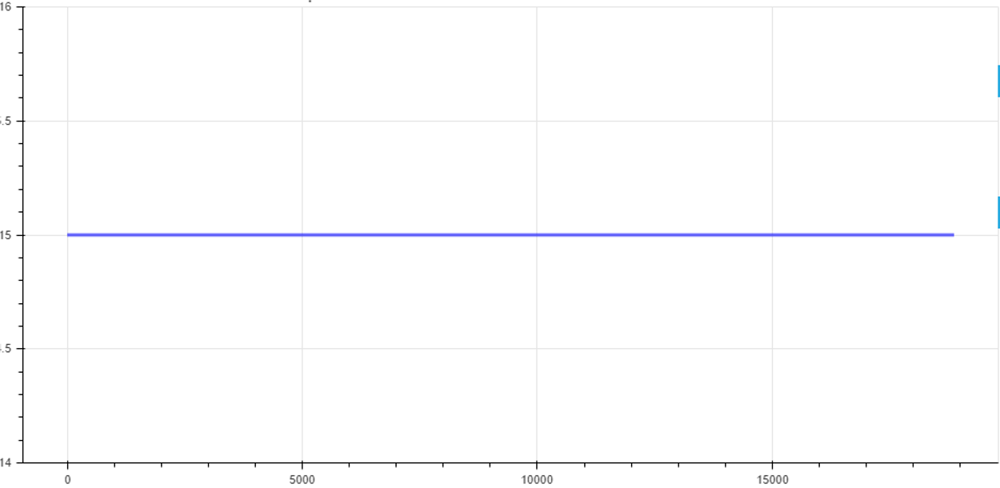
Out of Range
- To address this
- Verify casing thickness is correct in app and correct spacer is being used
- Verify sensor tip is clean and clearance probe hole is clear of debris. Clean if required
- Re-perform Figure 22: White Dot Test. If sensor fails white dot test, quarantine the tool and inform the tool center
- Manually determine rotor RPM and compare this value to what the app is calculating. If there is a major discrepancy use manual RPM
- If all troubleshooting steps have been exhausted contact the Outage Tooling Team for further instructions and submit an ER case David.Runkel@ge.com
- Perform manual checks if troubleshooting is not successful
- This can be caused by
-
Figure below represents Points Between Blade Filter Error can occur when the sample frequency is incorrectly set or the Points Between Blades is incorrectly calculated
- To address this
- Manually determine rotor RPM and compare this value to what the app is calculating. If there is a major discrepancy use manual RPM
- Verify, in Figure 44 App Settings, that the Points Between Blades is set to Automatic, Points per blade is set to 8, and minimum points is set to 2. Note, these settings should not be manipulated and will be password controlled
- If all troubleshooting steps have been exhausted contact the Outage Tooling Team for further instructions and submit an an ER case David.Runkel@ge.com
- Perform manual checks if the troubleshooting is not successful
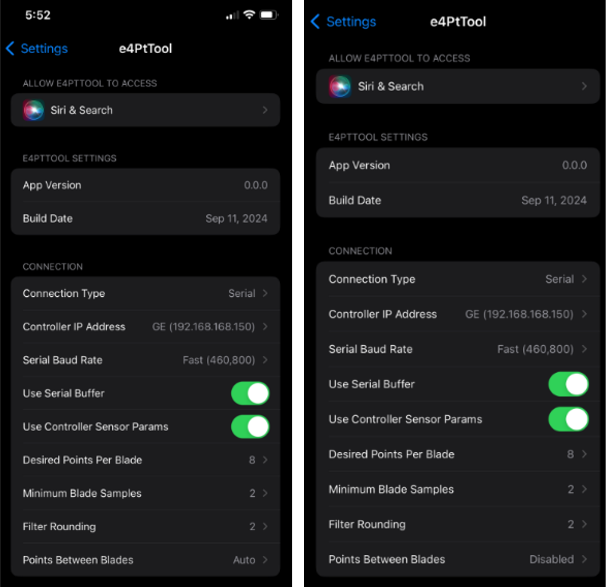
App Settings (HA left, all others Right)
- To address this
-
Figures below can be caused when the sample frequency is incorrectly set or the Points Between Blades is incorrectly calculated
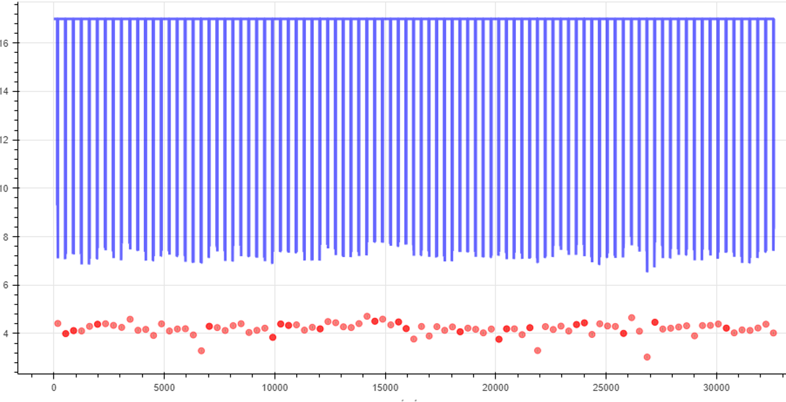
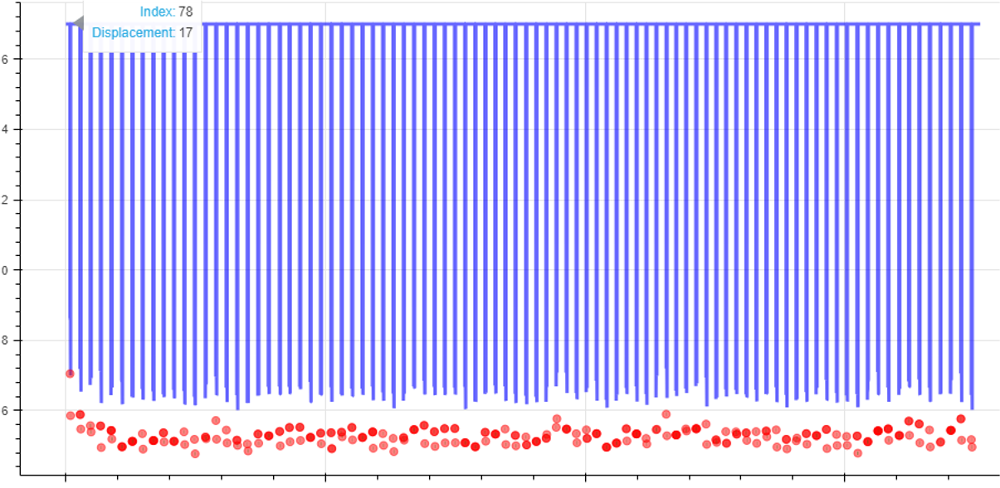
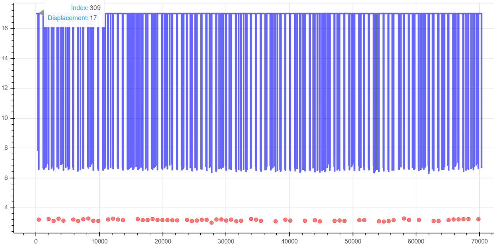
Noisy data
- Noisy data should not be accepted. To correct noisy data
- Manually determine rotor RPM and compare this value to what the app is calculating. If there is a major discrepancy use manual RPM
- Verify, in Figure 44 App Settings, that the Points Between Blades is set to Automatic, Points per blade is set to 8, and minimum points is set to 2. Note, these settings should not be manipulated and will be password controlled
- Verify sensor tip is clean and clearance probe hole is clear of debris. Clean if required
- Re-perform Figure 22: White Dot Test. If sensor fails white dot test, quarantine the tool and inform the tool center
- If all troubleshooting steps have been exhausted contact the Outage Tooling Team for further instructions and submit an an ER case David.Runkel@ge.com
- Perform manual checks if the troubleshooting is not successful
- Noisy data should not be accepted. To correct noisy data
-
Figures below Clear Double Counting occurs when the sample frequency is set too high and the tool misidentifies multiple points on the airfoil as different airfoils.
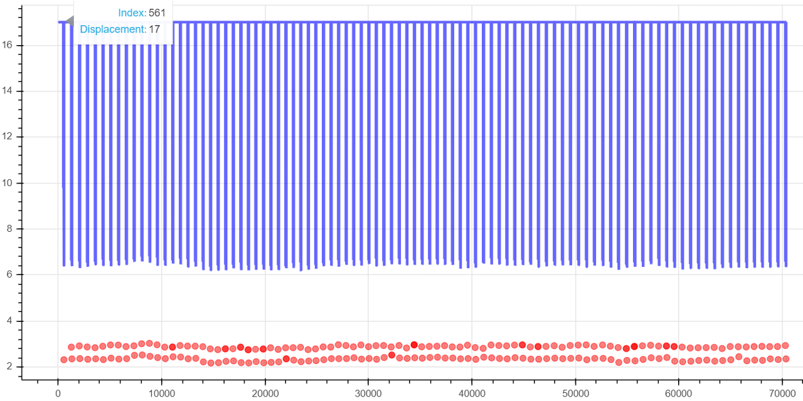
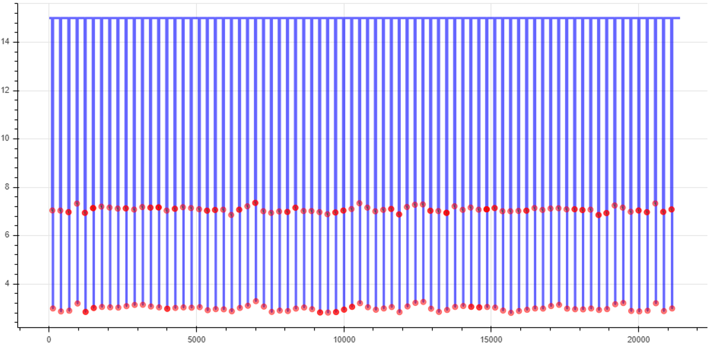
Clear Double Counting
- Clear Double Counting can be noted as 2 distinct points on a squealer tipped airfoil. To address this
- Manually determine rotor RPM and compare this value to what the app is calculating. If there is a major discrepancy use manual RPM
- Verify, in Figure 44 App Settings, that the Points Between Blades is set to Automatic, Points per blade is set to 8, and minimum points is set to 2.
- Pervasive double counting (See the top plot of Figure 47 Discrete Double Counting) and clear shelf double counting (See Figure 46 Clear Double Counting) is not allowed. Analysis must be re-run.
- If all troubleshooting steps have been exhausted contact the Outage Tooling Team for further instructions and submit an an ER case David.Runkel@ge.com
- Perform manual checks if the troubleshooting is not successful
- Clear Double Counting can be noted as 2 distinct points on a squealer tipped airfoil. To address this
-
Figures below Discrete Double Counting is a more common phenomenon that occurs over all frame sizes.
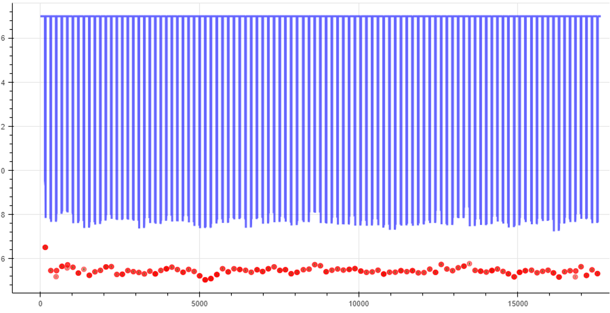
 Discrete Double Counting
Discrete Double Counting
- Discrete double counting occurs for a variety of reasons, if no more than 1/8 of airfoils measured exhibit discreet double counting on the airfoil tip (See the bottom plot in Figure 47 Discrete Double Counting) the maximum clearance error has been calculated to be ~10-13%.
- Pervasive double counting (See the top plot of Figure 47 Discrete Double Counting) and clear shelf double counting (See Figure 46 Clear Double Counting) is not allowed. Analysis must be re-run. If it persists perform manual check and submit ER case
- Discreet Double Counting can be diagnosed by close inspection of the clearance plot. Darker clearance dots indicate multiple clearance values in close proximity to each other.
- In Figure 47 Discrete Double Counting the top plot shows pervasive double counting in that a majority of airfoils have overlapping clearance values. This data is unacceptable and should be re-run
- The lower plot shows an acceptable discreet double counting event around index 5000 on the X axis. Discreet double counting is easily identified by a darker clearance circle
- To address double counting in all forms
- Manually determine rotor RPM and compare this value to what the app is calculating. If there is a major discrepancy use manual RPM
- Verify, in Figure 44 App Settings, that the Points Between Blades is set to Automatic, Points per blade is set to 8, and minimum points is set to 2. Note, these settings should not be manipulated and will be password controlled
- If double counting can not be resolved manual clearances must be taken and the Outage Tooling team contacted. Be prepared to pass along any run and clearance data for analysis, as well as Final save data
- If all troubleshooting steps have been exhausted contact the Outage Tooling Team for further instructions and submit an an ER case David.Runkel@ge.com
- Perform manual checks if the troubleshooting is not successful
-
Garbage data and incongruous clearances

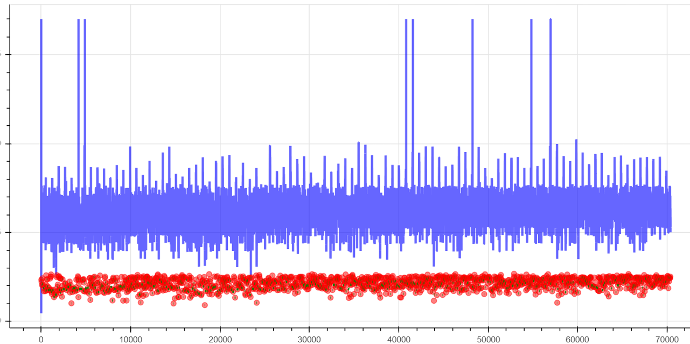
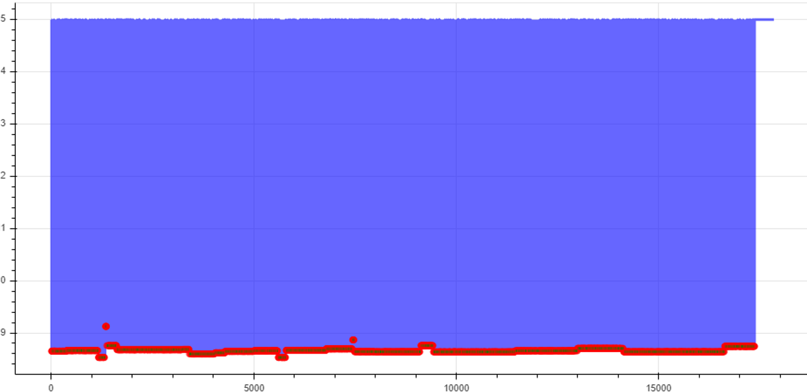
Garbage Data
- Figure 48 Garbage data has multiple causes, all of them serious data errors
- Re-perform clearance calculation. If data is garbled perform clearance calculation at another location and compare data plots
- Check sensor lens cleanliness – clean with an approved wipe
- Check sensor lens for defects
- Check clearance plug hole and ensure it is completely clear
- Perform white dot test and note any abnormalities
- Perform Operability check of sensor at least 5 times 1 minute apart and record op check value
- If all troubleshooting steps have been exhausted contact the Outage Tooling Team for further instructions and submit an an ER case David.Runkel@ge.com
- Perform manual checks if the troubleshooting is not successful
-
Data Post Processing
- The collected data is filtered to remove anomalies created by the leading and trailing edges of the airfoil. The data is then filtered to ensure that only the squealer tip (if applicable) is measured for averaging. If no squealer tip is present on the airfoil (determined programmatically) the tip measurements are collected as is.
- The data is then averaged over each airfoil to obtain the measured displacement from the sensor tip. This displacement is then run through a calculation to determine the actual clearance between the casing and airfoil.
- In the event that there are concerns about the measurements, or if the measurements are questionable it is possible to post process the data using alternate methods
- Please contact the Outage Tooling Team David.Runkel@ge.com to perform this post processing. Include the box link to where your data is stored and a description of your issue
-
An iPad or iPhone with GE mobile Iron (or equivalent GE Vernova security app) installed is required to install the e4Point tool from the GE Vernova Apps Store
NOTE: FRD instructions are also available in the app
NOTE: all pictures and figures below are for reference. Actual App pictures and figures may vary and shall supersede all FRD pictures or figures
- Download the “e4 Point” app from the GE app store to a GE iPad or iPhone if not already done.
- Connect Base station power supply cable to the Base Station and to a GFCI 120V or 220V power source
- Position the base station near the gas turbine compressor section. Keep in mind that the sensor cable, Serial cable, and Power Cables constitute a tripping hazard. Care should be made to position the base station close to the compressor casing, generally at the Horizontal joint has been sufficient. If possible keep the base unit out of direct sunlightAdditionally, the Fiber Optic cable may not be bent with a radius any less than ~50mm radius and should never be kinked
- Power on the Base station (100-240V AC, 50-60hz 0.48A MAX). An adaptor may be needed. The kit comes with a standard NAM and a EU plug. Turn the base station on by flipping the single rocker switch.
- Connect iPad or iPhone to the armored serial cable, and then open the e4 point App and press the menu button. You can confirm that the app has connected via the SERIAL indicator circle in the top right corner of the app. The indicator circle should be GREEN as shown below in Figure 18 E4 point app startup menu and main side menu. If the indicator is not green, open the main menu. This should force the connection from the app to the controller.
- Sensor and controller warmup time is 10 minutes. Measurement prior to 10 minute warm up period will result in erroneous dark reference, Op Check, and clearance data.
- Good practice is to set up and turn on the e4 point tool and then remove clearance hole plugs and note casing thicknesses while waiting for warm up
- Manufacturers recommended warm up time is 60 minutes. Per GE Vernova testing it has been found that a warmup time of 10 minutes is adequate to maintain tool accuracy.
- Once 10 minute warm up time has elapsed open the Menu page and select “Sensor Setup” Submenu
 E4 point app startup menu and main side menu
E4 point app startup menu and main side menu
- Ensure the dark refence cap is firmly fit over the end of the sensor and then select the “Dark reference” submenu. Follow the on-screen instructions to perform dark-referencing of the sensor.
Dark Ref Cap on Sensor
-
Dark Referencing sets a reference value for the controller as an “Out of Range” value. It is displayed as ‘17’ on the data plot after dark referencing. This is done by digitally analyzing the noise and hysteresis inherent in the system and removing this from all calculations
 Dark Reference Menu
Dark Reference Menu
- Dark Referencing must be done every time the controller is powered on
- A failed dark reference is anything other than what is shown in Figure 21 Post Dark Reference data collection
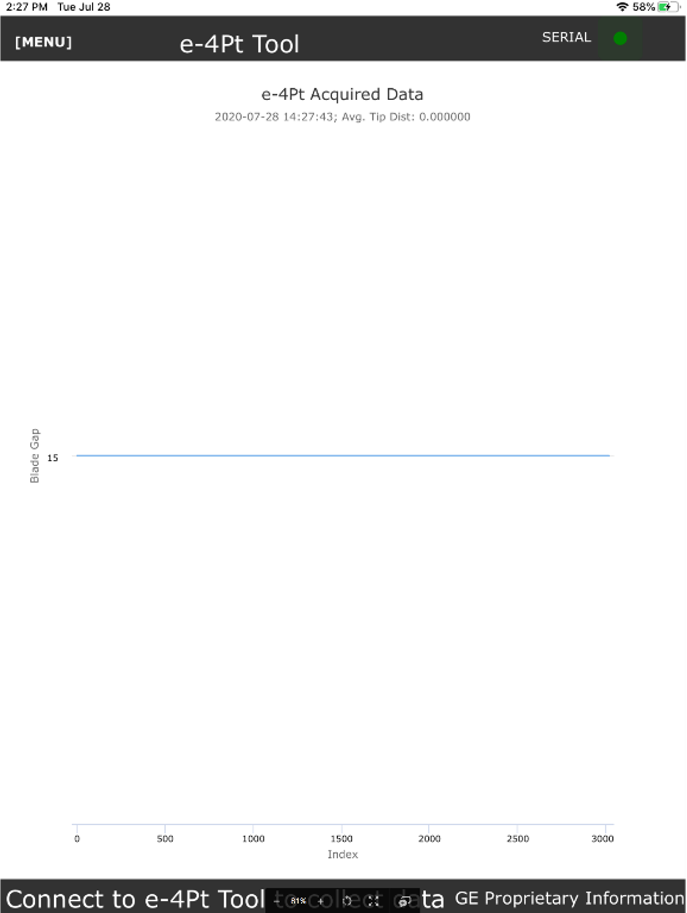
Post Dark Reference data collection
- Remove dark reference cap from sensor.
- Perform “white dot” test on the op check fixture by holding the sensor ~15mm from the top of the op check fixture.
- The dot on the fixture should be clear and bright with no halo or half moon artifacts.
- If any artifacts are noted, the e4 point kit should be sent to the tool center. Further investigation is required, the Outage Tooling team must be informed
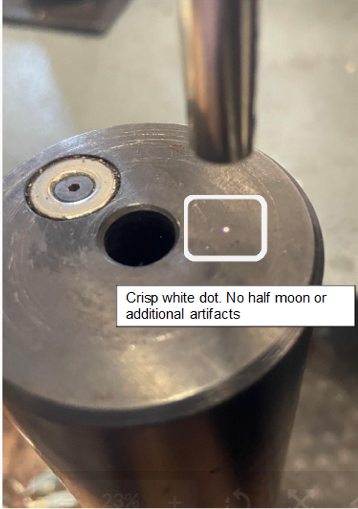
White dot test
- Verify the sensor mating surfaces and lens are clean and carefully insert the sensor into the Op-Check fixture.
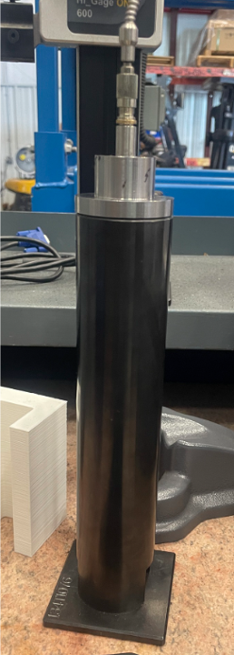
Mastering Fixture with Probe inserted
-
Select “Operational Check” from the submenu and follow on screen instructions for checking the sensor measurement. When Op-Check is complete a pop up will display the measured and calculated sensor displacement as well as if this is an acceptable outcome
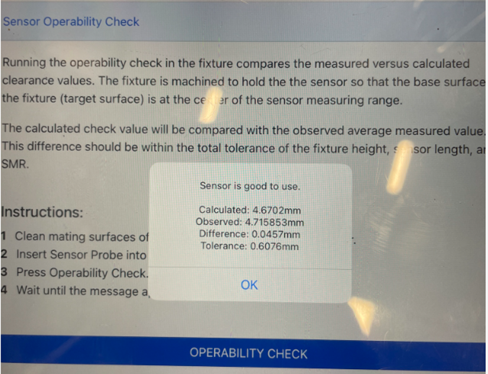
Op Check Menu and Pop Up
If the sensor fails the operational check perform the below, in order, until the op check passes or the list is exhausted (sections 5.4.7.14.1 to 5.4.7.14.5)- Verify sensor lens is clean and reattempt the op check
- Cycle the app open and closed and reattempt op check
- Power cycle the controller. Wait at least 1 minute between power off to power on. Reperform all preceding steps for warm up and dark reference
- If the Op-Check comes back showing failure, re-check the measurement after verifying the lens and fixture are clear of debris
- If the sensor op check still fails the kit must be sent back to the tool center for further investigation, an ER case be opened and an NCR submitted, and the Outage Tooling team informed. Include all information about failure and e4 point logs and JSON file
- Verify that sensor op-check is acceptable via pop up
- If the Op-Check comes back showing failure, re-check the measurement after verifying the lens and fixture are clear of debris
- If the Op-Check value still yields unacceptable results the kit must be red-tagged and sent back to the tool center for maintenance
- ShapeShapeShapeShapeShapeShapeShapeThe sensor is now ready to use. Do not turn power off until all measurements are complete, data has been saved to GE Vernova Box, Final Save Data is loaded to box, and a Customer report has been generated.
- If all troubleshooting steps have been exhausted contact the Outage Tooling Team for further instructions and submit an ER case: David.Runkel@ge.com
- Connectivity and operation errors can be diagnosed using Table 2 Typical Connectivity and Operation Errors
| Issue | Solution |
|---|---|
| Serial connection indicator is not green on initial start up or connection error message |
|
| Dark Reference plot does not show flat line at 17mm |
|
| Collected Data on output plot does not show as expected across all airfoils in a stage |
|
| Dummy probe is decapitated by compressor airfoil |
|
| System power loss |
|
- Upon receiving new tooling from vendor or tool center. Perform an inventory to ensure all components are in the kit as intended.
- Inventory the kits referencing the appropriate bill of materials. If any of these components are missing they must be replaced before placing the tooling into storage or shipping to the next job.
- Common repair parts that will need to be accounted for in each post-outage servicing are:
- Magnetic Routing Rings (Mcmaster part 1706T74)
- US and European Power cords
- USB lightning cable (Apple Product)
- Perform QA Checks per QA-T-0025 at Vendor prior to initial receipt and annually thereafter for all tools listed in Table 1 Kit and spacer applicability
- Prior to sending tooling to the field
- Clean and inspect all components
- Care must be shown in cleaning sensor lens with a lint free optical cloth.
- All spacers shall be visually inspected prior to sending to field
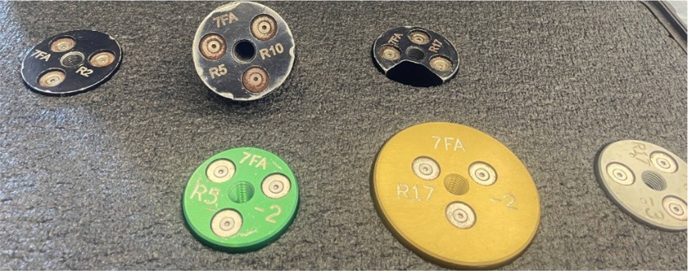
Spacer Visual Inspection
- Any defects such as dents or deformations shall be measured
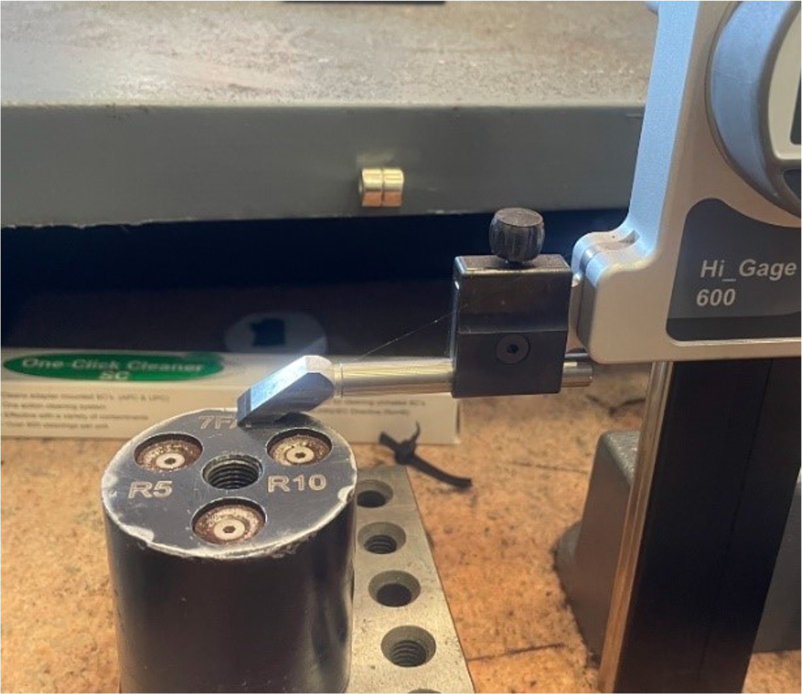
Spacer Defect Measurement
- No defect is allowed to increase the spacer length, as per the individual drawing (see Table 1 Kit and spacer applicability)
- Measurement shall be performed with a precision height gage as shown in Figure 50: Spacer defect measurement
- If a spacer is measured outside the drawing tolerance it must be sent to the vendor for repair or replacement
- Any defects such as dents or deformations shall be measured
-
Inspect all magnets
- Magnets must be whole and not cracked or broken. Broken magnets must be replaced
- No magnet or retention screw may protrude above the spacer surface.
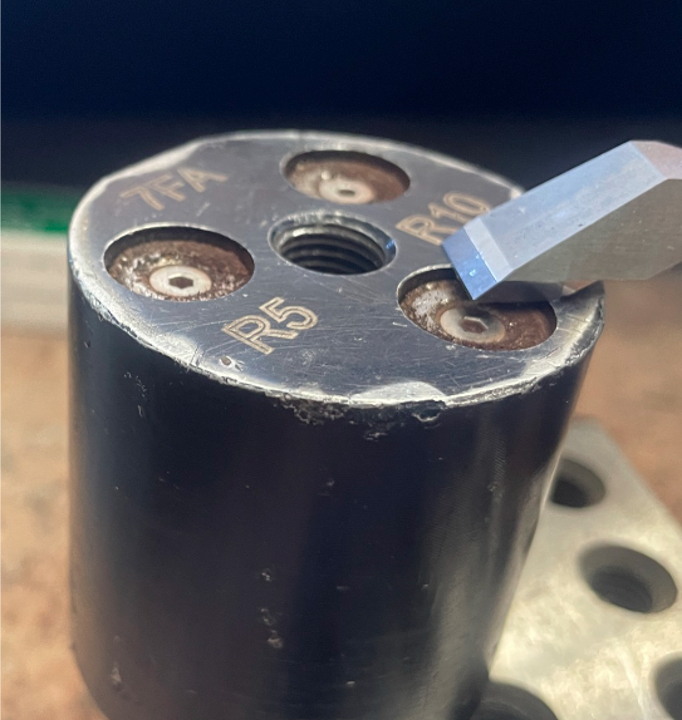
Magnet surface measurement
- All magnet surface area must be clean of debris
- Power on the e4 point tool and perform the following inspections
- Verify (through controller window) that all lights are energized
- Remove the dust cap from the sensor and perform the white dot test on any matte surface as shown in Figure 52: White Dot Test
White dot test
If the white dot test fails, the tool must be sent back to the vendor - Replace the sensor dust cap
NOTE:
For any given turbine the data collection process is the same. Follow the below instructions using the sensor and spacers prescribed for the turbine frame being measured.
NOTE:
At no time should the e4 point app be closed or backgrounded during operation/data collection. This could cause the app to lose the serial connection to the sensor and result in a need to recollect the data for the most recently measured location. Airplane mode may be used to prevent data collection disruption
- Turbine Data Collection Menu
- Select Main menu and enter “Measure Turbine” submenu.
- Select or enter all appropriate information in the entry boxes or drop down menus then select Next at the bottom of the page
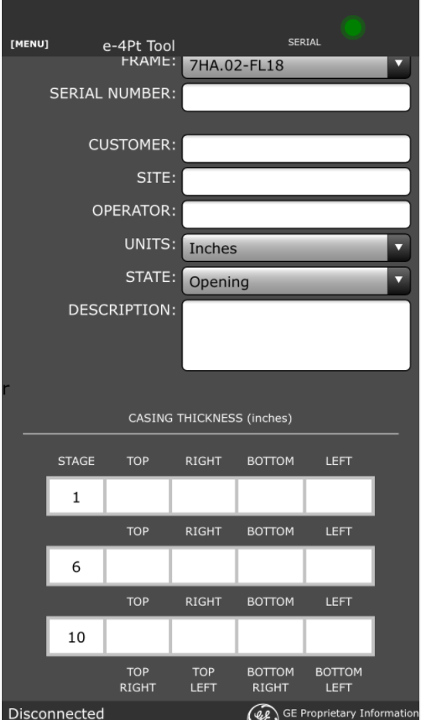
Figure 25 Measure Turbine data screen and entry
- Turbine measurement screen
- Determine starting location on turbine and select it from the drop-down menus, or select the cell in the table. See Figure 26 Data Collection screen
- This can be performed by selecting from the drop-downs or manually selecting the desired cells.
- User can manually scroll left/right and up/down by using the touch screen. This may be necessary for frames that require more data. Additionally, changing the screen orientation may help with viewing data
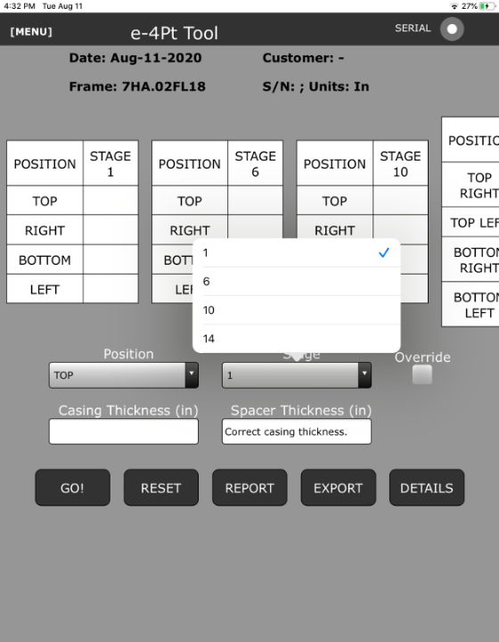
Figure 26 Data Collection screen
- Enter Casing thickness for desired stage and location. Spacer thickness and color code are automatically populated.
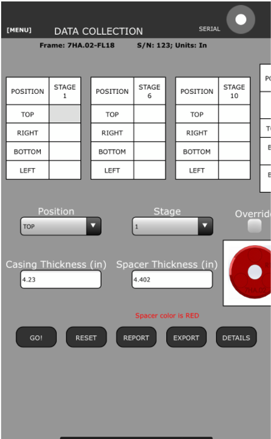
Figure 26 Data Collection screen
- Determine starting location on turbine and select it from the drop-down menus, or select the cell in the table. See Figure 26 Data Collection screen
- Determine and collect the rotor actual RPM for later use/calculation.
- RPM can be determined manually (counting rotations), via the app (below) or if aligning the ITS with TRACC Scan on an HA unit via the TRACC Scan app
- Tool based RPM calculation can be performed by
- Selecting a stage and location convenient to the operator
- Install correct spacer for the location
- Check gross sensor clearance with Dummy Probe through spacer and casing
- Insert sensor through spacer and casing
- Select “Calculate” next to RPM in the app, see Figure 28 : RPM Calculation in app
- Manually verify RPM against calculated RPM
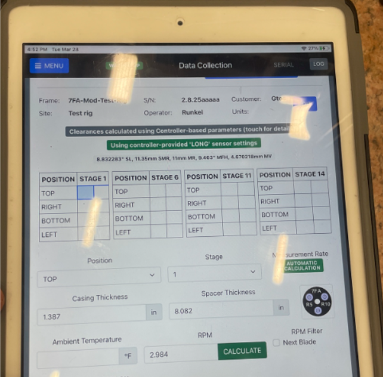
Figure 28 : RPM Calculation in app
- Ensure the Rotor is rotating at a constant rate between 0.5 and 15 RPM.
- Clearance measurement
- Select desired measurement location in the table or via drop down menu
- Place the prescribed spacer, as shown in the app and marked on the spacer, in the clearance probe recess on the casing and verify a solid connection between the casing and spacer magnets.
- Units with a double wall casing can collect debris on the mating surface. It has been found that inserting the spacer to collect all ferrous material from the inner casing is an effective way of clearing out the debris.
- Insert the Dummy probe (slightly longer than the sensor) into the spacer and through the casing.
- Wait at least ½ revolution to allow several blades to pass over the dummy probe before removing the dummy probe.
- This ensures that the sensor will not impact the compressor airfoils.
- When satisfied that this safety check has been completed, remove the dummy probe
- Carefully insert the sensor into the spacer and through the casing. Sensor will engage with the spacer magnets to provide rigid connection.
- Verify Rotor RPM previously obtained is entered and correct
- Select “Collect” button to collect clearances
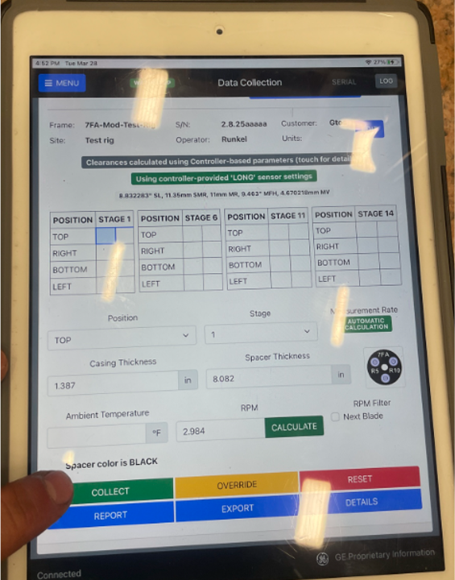
Figure 29: Collect button
- The app may provide a pop up warning that states the casing thickness is outside the allowed limits.
- Verify the casing thickness is entered correctly
- If it is entered correctly, this casing location may not be measured via the e4 Point tool due to a potential danger to the sensor tip and compressor hardware
- An ER case must be entered documenting this issue
- Manual drop checks must be performed on this location
-
The App now calculates Sampling Rate and Intensity Threshold based on the below Plot/Table.
- The sampling rate and intensity threshold are used to ensure the minimum number of points per airfoil are obtained while performing the clearance inspection. Intensity Threshold and Sampling rate are calculated prior to each measurement and depend on the turbine frame, number of airfoils, and rotor RPM.
 Sampling Rate
Sampling Rate
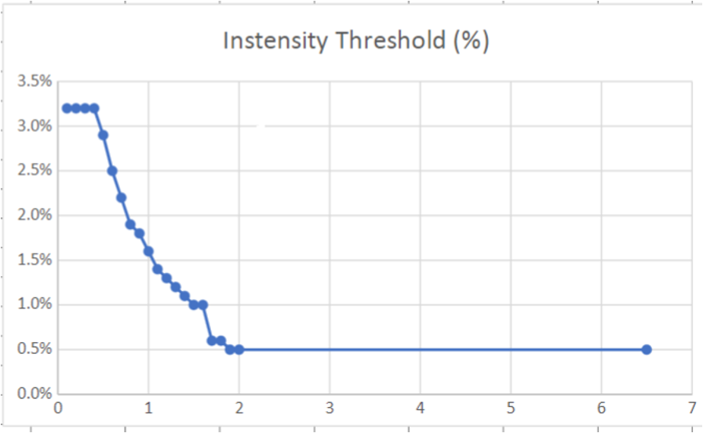
Intensity threshold plot
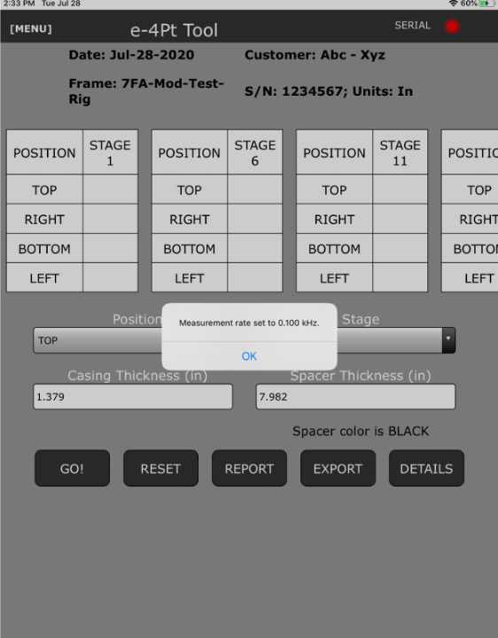
Sampling rate prompt
WARNING!
Modification of Sampling rate, Intensity, Points Per Blade, Next Blade Filtration, and Minimum Samples values while collecting samples should only be performed under the instruction of the Outage Tooling Engineers.
- The sampling rate and intensity threshold are used to ensure the minimum number of points per airfoil are obtained while performing the clearance inspection. Intensity Threshold and Sampling rate are calculated prior to each measurement and depend on the turbine frame, number of airfoils, and rotor RPM.
- The tool then begins measuring the compressor airfoil tips as they pass the sensor. The Serial connection dot turns Red while data is being recorded. A green progress bar is shown at the bottom of the screen to show progress of data collection and provide user feedback in the event that the app freezes.
NOTE: If the app has a large quantity of files in the background the advancement of the progress bar may be slowed. Ensure there is sufficient free memory available and that all background operations are interrupted otherwise processing time may increase.
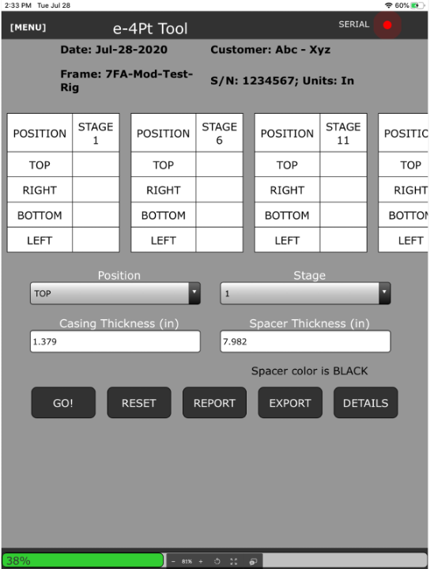
Data collection progress bar
- When the data has been fully collected the app will populate the clearance data in the table at the top of the screen for the measured stage and location.
- The app will also plot the displacement and clearances values for a single location
- The plot will pop up over the clearance data for the user to inspect. This plot can be closed to interrogate clearance values. See 33 Troubleshooting section for more information on diagnosing plot information
- To access this plot, scroll down on the collection screen after measurement has completed
- Analysis of this plot can show the operator if a successful run has been performed based on the displacement signal and clearance points.
- Several examples of common plots are shown below. If any questions arise, contact the Outage Tooling Team. See the Troubleshooting section for more information on diagnosing data issues
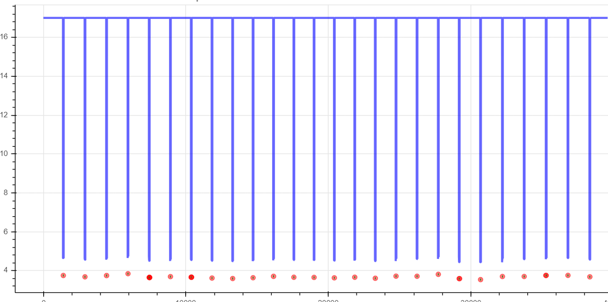
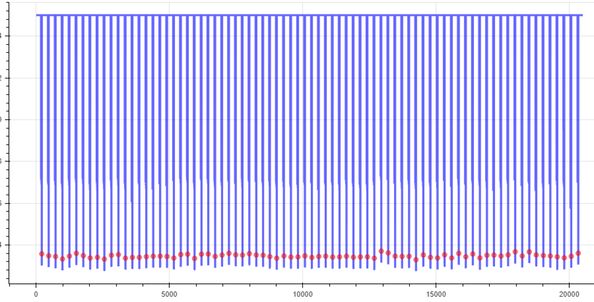
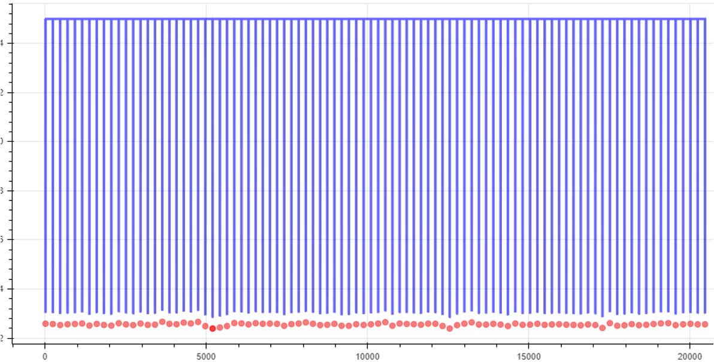
Figure 33 Complete data plot Acceptable
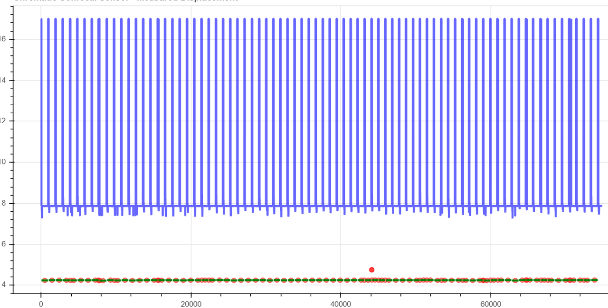
Figure 34 Excess Clearance value calculation plot- unacceptable
Figure 35 Double Clearance plot – unacceptable
Figure 36 Discreet Double Clearance – overlaid clearance. Remeasure
Figure 37 Garbage Data- Unacceptable
Figure 38 Noisy Data – re-measure. May need Manual Drop Check Verification
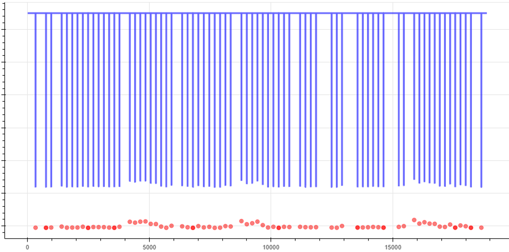
Figure 39 Missing Airfoils Situationally acceptable, may need manual drop Check Verification
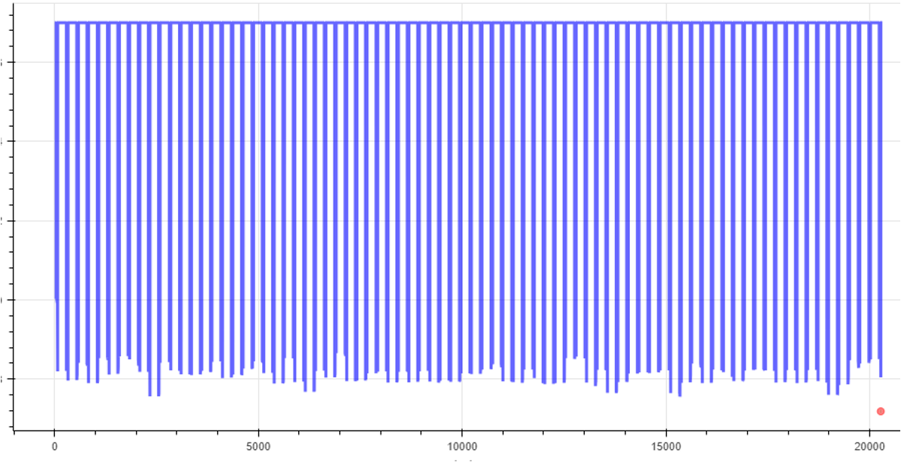
Figure 40 Missing clearance values with displacement. UnacceptableFigure 41 Measurements out of range. Check spacer and re-measure.- Useful statistics will be presented on the Details page.
Tools, Equipment, and Materials


Troubleshooting
This setting should be changed in the iOS application settings.
- Select “SERIAL cable” to use serial cable.
- Select “ETHERNET” to communicate over ethernet.
- Select “DEMO” to use pre-recorded data.
Update Controller Configuration
The controller should be pre-configured with expected output settings. If this is not the case, the controller may be re-configured to these settings.
- Set the language to English
- Set the Serial baudrate to 460,800
- Set the Ethernet static IP to 192.168.168.150
Only perform this procedure if the controller is not configured correctly.
After updating the controller, this application must be closed and restarted. Settings should be retained after power cycling the controller.
Scan Information
| Collection Date: | ||||||
| Frame: | S/N: | Customer: | ||||
| Site: | Operator: | Units: |
Clearances calculated using Controller-based parameters (touch for details)
, , , ,
Measurement Locations
Spacer

Sensor Controls
Set Sensor Probe Dark Reference
Dark referencing smooths out the signal output because it acquires the sensor brightness at this specific point in time. It is critical the sensor be covered with a cap and in a fully dark pocket. This step is needed every time the tool is plugged in or power cycled, or if the data is showing noise. If the dark reference fails, it is likely the sensor or connection is contaminated.
The system requires a warm-up time of approximately 30 minutes prior to setting the dark reference. Please ensure that the system has been powered on for 30 minutes to ensure it is warmed up.
- Cover the sensor with the sensor cap to ensure that nothing is in the measurement range and no ambient light enters the sensor.
- Press the Start Dark Reference button to initiate the process.
The indicator light will flash yellow, then red. After <30 seconds, this page will disappear and you should see a flat line displayed indicating a successful dark reference.
Running the operability check in the fixture compares the measured versus calculated clearance values. The fixture is machined to hold the the sensor so that the base surface of the fixture (target surface) is at the center of the sensor measuring range.
The calculated check value will be compared with the observed average measured value. This difference should be within the total tolerance of the fixture height, sensor length, and SMR.
Instructions:
- Clean mating surfaces of the Sensor Probe and the Set Master.
- Insert Sensor Probe into the Set Master.
- Press Operability Check.
- Wait until the message appears.
Increasing measurement rate is needed with higher RPM to ensure enough data points per blade tip, however increased measuring rate is a tradeoff requiring a lower intensity threshold (a lower sensitivity of the sensor) and blades could be missed entirely.
Only authorized users should change the sensor parameters here.
When changing the Op Check Value here be certain to perform Mastering before collecting data, else clearances may be calculated incorrectly.
The Fixture height defaults are:
- Short Fixture
- " +/- 0.0005in
- Long Fixture
- " +/- 0.0005in
The production sensor default lengths are:
- Short Sensor
- " +/- 0.0005in
- Long Sensor
- " +/- 0.0005in
Local Data
| Select | Frame | S/N | Customer | Site | Description | Date | Time |
|---|
Archived Data
| Select | Frame | S/N | Customer | Site | Description | Date | Time |
|---|
Local Files
| Final Data | Preliminary | Log | Other |
| Filename |
|---|
Data Details
| Stg | Pos | Clr | Max.Clr | Min.Clr | Med.Clr | Std.Clr |
|---|